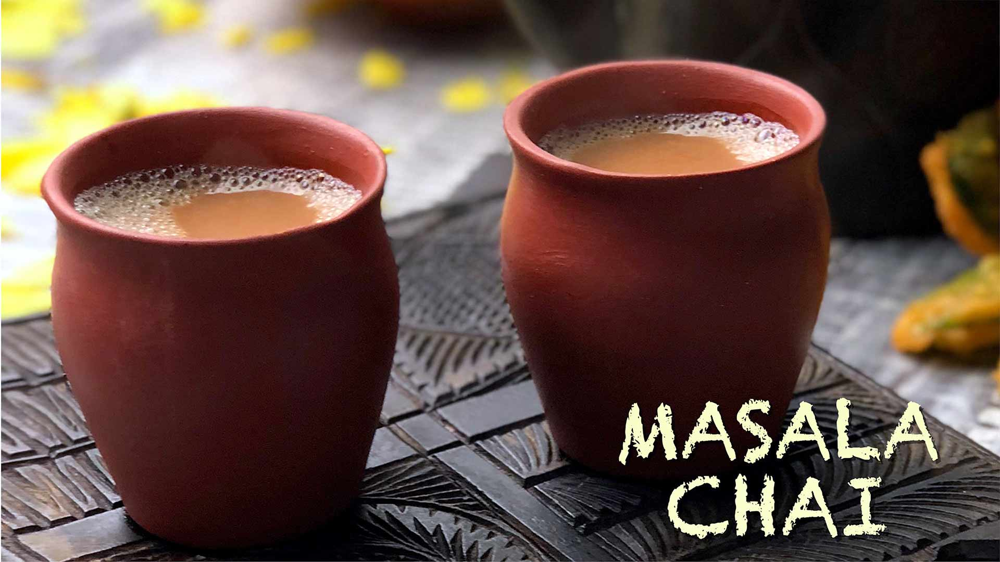

The 'MASALA CHAI'
~Aroma Sinha

Ingredients
Cinnamons
Green Cardamoms
Cloves
Ginger
Sugar
Tea pack
Milk
Nutmeg powder
love.
Recipe-
1. Take ½ inch cinnamon(dalchini), 2 to 3 green cardamoms(ilayachi), 2 cloves and 1 inch ginger in a mortar-pestle.
2. In a small pan with a handle, heat 2 cups water (500 ml).
3. Let the water come to a boil and then add the
crushed spices. if you want you can even add a pinch of nutmeg powder(dalchini)along with the spices. Some mint leaves or lemon grass also can be added.
4. Boil the spices along with the water for 2 to 3 minutes. add sugar as per taste.
I usually add 4 teaspoon sugar(2 people) . You can add more or less depending upon the sweetness desired.
5. Now add 2 teaspoons of any kind of tea that you have at home. Boil for a minute. This boiling time depends on how strong you
want your tea. If you prefer a strong intense tea, then simmer for a few more minutes.
6. Add 2 cups of milk. Add more milk if required. If using almond milk, then gently heat through.
7. After adding milk boil for 2 to 3 minutes.
If using chilled milk, then boil with tea for 2 to 3 minutes. if using hot milk, then add the milk and switch off the flame.
8. Pour the tea through a tea strainer directly in the cup.
9. Serve it with any snacks that you have.
As the rainy season have begun, Bhajiyas can also work for Indians.
Back to Categories (श्रेणियों में वापस)
Back to Recipes (व्यंजनों पर वापस जाएं)